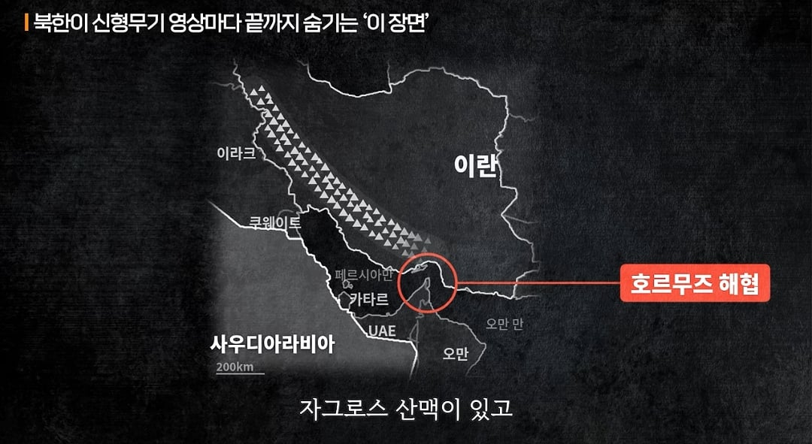
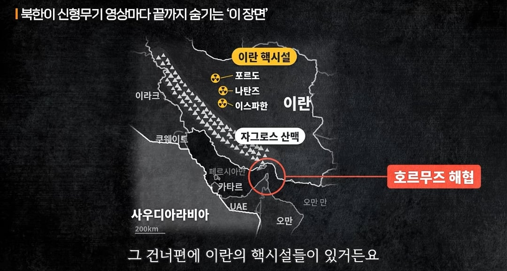
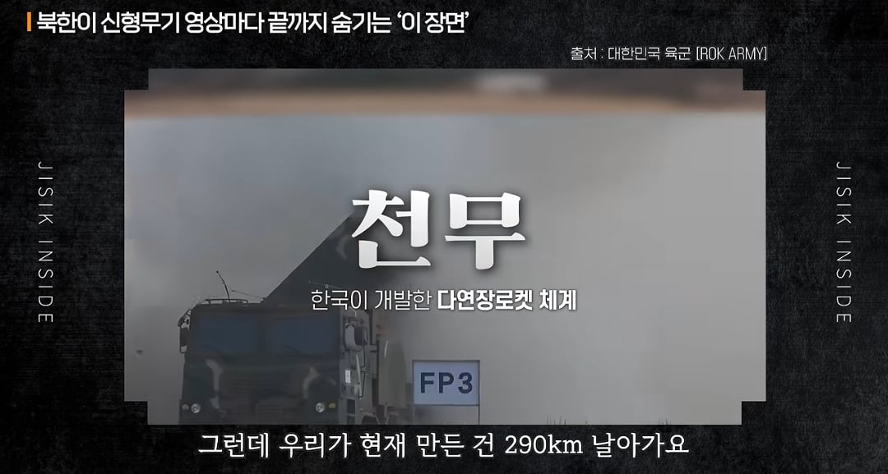

출처:지식인사이드 샤를세환 기자



출처:지식인사이드 샤를세환 기자

다음날이면 온 동네사람들이 다 알고 있음 ....
아 그래도 아니라니까~
유튜브수익얻겠다고 천기누설하는겨?
뭔;; 넌 공신력 없는 유튜브를 믿냐? 그냥 조용히 어?
그냥 사라고 다 알아서(?) 290km도 충분 하다니까
굳이 까지 않아도 어지간한 정보기관이라면 다 알만한 내용임
지금 현무5가 사거리 300에 탄두 중량이 9톤으로 추정되는데 여기서 중량 야금야금 줄이면 사거리 늘어나는거지
현실에서는 알려달래도 죽어도 안알려줘도 유튜브에서는 비법이니 뭐니 다 까발리지 ㅋㅋ
유튜브는 어디까지나 비공식이니까..ㅋㅋ 비.공.식.
저게 어딜봐서 천기누설ㅋㅋㅋ
어짜피 저런건 사는 쪽에서도 500km짜리 원하면 기사는 방비선 300km으로 구축한다고 내고, 500km라고 공표했으면 800km짜리 제품을 원할거라
천기누설이아니라 쏘는 날의 날씨와 온도,바람 발사각 미사일의 그 날 기분 이런거에 따라서 290km가 될수도 500km가 될수도 800km가 될수도 있는거야
'그렇게 말하시면 안되고'
???:야 이놈아 어? 미사일이 조금만 힘을내면 10km 정도는 더 갈수있을거 아냐, 그렇게 야금야금 더 힘내면 500km도 갈 거 아냐!
영차영차
??? : 경제야 살아라!
https://www.youtube.com/shorts/q0WJnVrUeEk
야금야금 * 50
아~아
쇼가나이나~
'큰소리로 이야기하지마 이 멍청아'
이름만 때면
선생님 ㅋㅋ 우리가 그.. ㅋㅋ 눈치좀 ㅋㅋ
그렇게 말씀하시면 안되고
아이 씨잇팔 물건 사가셨으면 조용히 설명서 읽어보세요. 아니면 상담사 연결해드릴테니께...
거 동네방네 떠들지말고...
날씨영향을 많이받아서 가끔 500km도가고그래요
이거 완전 즈탱이네
저탱
테사기가 또…
아 그건 DLC예요~
돈 더 주시면 해금해드릴게요
당신들한테만 알려주는 거니까 비밀로 해주시고요
이…한국엔 정이라는게 있어요~~ 290km 랬다고 진짜 290km 만 가면 섭섭한거에요~~ 넉넉~하게 줘야지 2인분 같은 1인분 뭐 이런거 뭔말인줄 알죠? 아이고 그렇게 말씀 하시면 안되고~~
발사버튼위에. 보시면요 x2 요거 보이시죠? 이거먼저 누르시고 화면 보시면...
전동 킥보드 같은거지
'이 선을 자르면 속도 제한이 풀리니 자르지 마세요'
사막에서는 사거리가 쪼금 더 잘나와요
그거슨 그냥 기후 영향이에요! 한국은 산악지대가 많아서 290인거고~ 그 이상은 주변 영향에 따라..
웰캐 사짜같냐
아잇! 카달로그상 290km이지만 컨디션에 따라 좀더 가니까 일단 사셔
알라한테 기도하고 쏘면 210km 더 날라갈거에요 해주면 크어어 뻑 예 소리 나올듯ㅋㅋ
발사버튼 누르기 전에 응원한마디만 해주십쇼
이 버튼를 누르면 사거리가 늘어나니깐 절~대 누르지마세요!
알라가 살짝 밀어주면 닿는다
???: 누가 1톤 트럭에 1톤만 싣고다녀요?
북한 새끼들 양산이 병신이라 그런다며
집중정신교육 주간 한 번 할 때마다 사거리 조금씩 늘어남
군에 있을 때에 무기 재원 외우라고 하면 유효사거리, 최대사거리 따로 외우라고 했었음
근데 내가 당시에 GP에 있었는데 항상 유효사거리 바깥 최대사거리 안에 들어가도록 북한 GP를 조준하고 있었음
그래서 저게 무슨 차이인지 몰라서 일단은 가늠좌로 쏠 수 있는게 유효, 그 이상 곡사로 쏴야 하는게 최대인가보다 했었고
FPS 하다보면 거리가 너무 멀 경우 낙차 계산해서 쏴야 하는 것처럼 그런거구나 했었음
지금 보면 ㅋㅋㅋㅋㅋ 저런 것들까지 다 고려해서 만들어진 재원이구나 싶기도 함
쏘기 전에 간바레간바레 센빠이 한 번 외쳐주시면 사거리가 건강해져요
아무한테도 말하지마라
"만해"